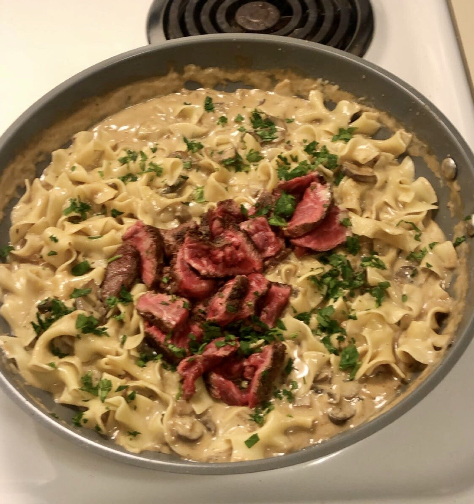

Beef Stroganoff

Ingredients
- Fresh Tyhme
- Fresh Parsley
- Salt
- Pepper
- 1/2 Cup of Heavy Cream
- 1/2 Cup of Beef Broth
- Half White or Yellow Onion
- Mushrooms (White, Bella, or Skitaki)
- 2-3 Garlic Cloves
- Sour Cream
- Horseradish
- Worcestershire Sauce
- Butter
- 2 or More 8 Ounce Steaks
- Egg Noodles
- Optional Vermouth
Preparation
- To start, cook your steak in a skillet on medium to high heat until you reach your preference. Add just a little oil to the pan so that the steak does not burn, but do not drown the steak in oil. After it is done cooking, place the steak to the side and cover with foil.
- Next, roughly chop your onions and mushrooms and toss them into the skillet on medium heat that you previously cooked your steak in. Optionally, you can add butter or oil when cooking your vegetables. Just be careful to not add too much because a lot of liquid will be introduced into the dish.
- After you chop your vegetables go ahead and finely chop your thyme and parsley and place to the side.
- Finely chop your garlic and add it to the skillet, wait until the garlic becomes fragrant and then mix throughly with the onions and mushrooms
- Now you can intoduce your liquds. Pour both half a cup of heavy cream and half a cup of beef broth into the skillet. Simmer for about 15 minutes until the sauce thickens. At this time you can add your egg noodles to boiling water. Both the sauce and noodles should be done about the same time.
- After about 10 minutes add a tablespoon of horseradish, a few teaspoons of worcestershire sauce, and a tablespoon of sour creeam to the skillet. Mix throughly. At this time you can also add a tablespoon of Vermouth if you would like. Next, take your thyme and add it to the skillet.
- At this time, uncover your steaks, and cut them to your desired size. Once the egg noodles are cooked add them to the skillet, mix, and then add your steak and fresh parsley on top.